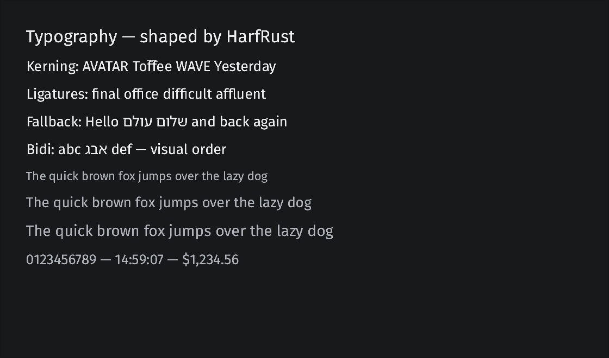
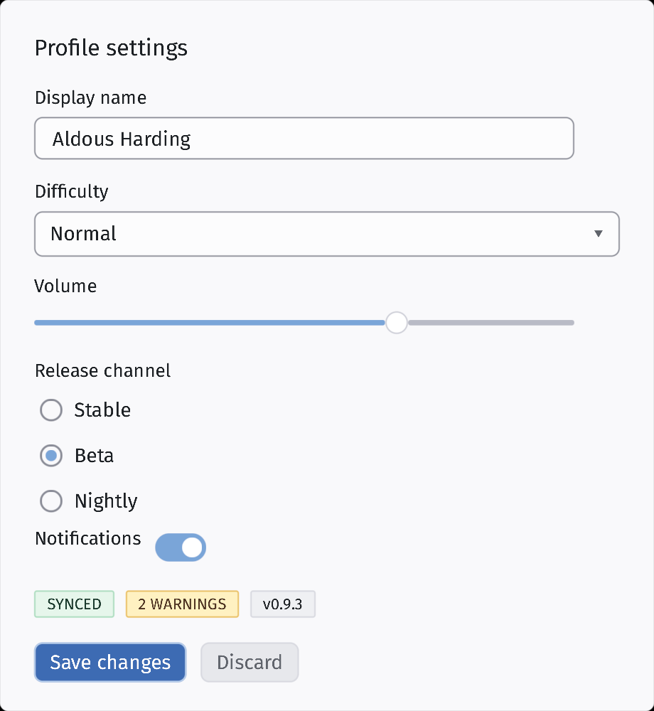
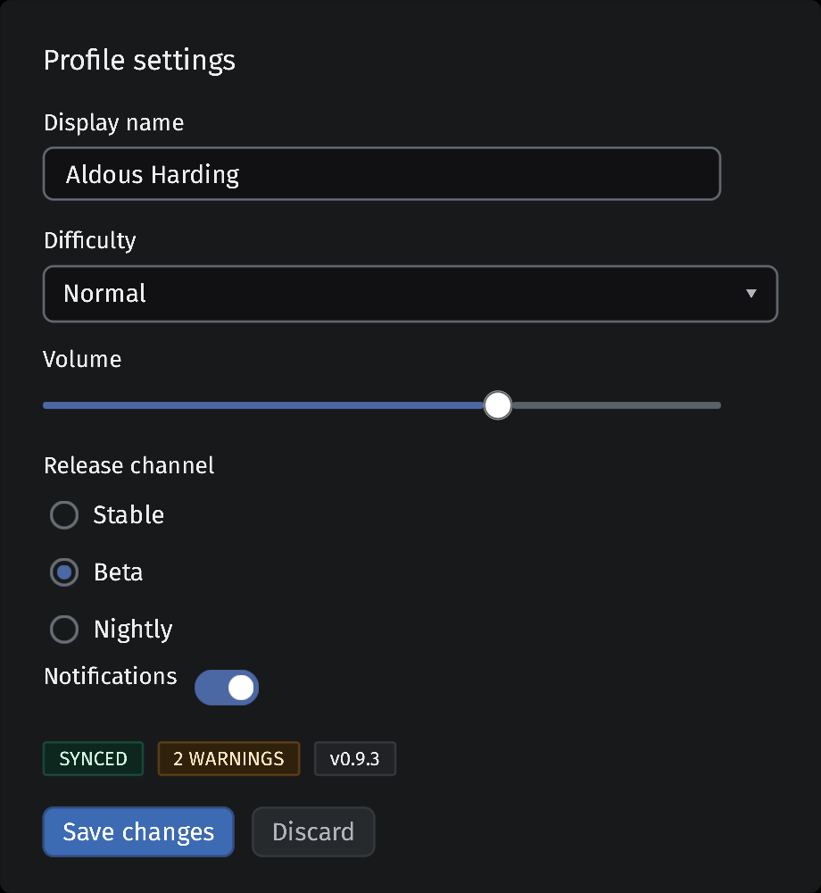
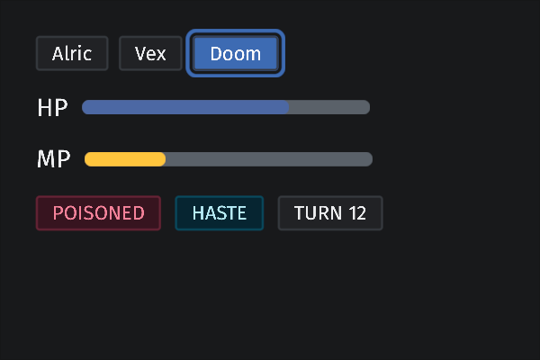

1Mlive rows
Performance · live data
Access log
The same million-line book in Sigil and GPUI, with 60 × 8 visible cells ticking every 16 ms.
28 runnable examples · August 2026
Sigil owns its layout, text, reactivity, accessibility, and wgpu rendering. These are the programs already in the repository—from a twenty-line counter to a million-row live tape.

Nativewinit + wgpu
Retaineddirty work only
Three hostswindow · embed · TUI
One importsigil::prelude::*
These are native captures from the repository’s existing visual suite. No browser recreation.



One window, every public widget, live hover, focus, disabled, and reactive states.
cargo run -p widget-playground
examples/.Mock data is labelled. Native I/O is labelled. The old low-level proofs are still here because v0.0.1 is an inventory, not a victory lap.
28 shown
Performance · live data
The same million-line book in Sigil and GPUI, with 60 × 8 visible cells ticking every 16 ms.
Performance · parity
A 1:1 build of GPUI 0.2.2’s data-table example, including the same data and window geometry.
Performance · catalogue
Every public widget in five sections for fast manual checks of interaction and reactive state.
Performance · full path
Tree, layout, reactive updates, events, focus, scene emission, and the default render loop in one dashboard.
App · native I/O
A working desktop app with GPU menu chrome, native file dialogs, persistence, system tray, and external links.
App · native audio
Audio playback, transport controls, reactive progress, and seeking against a real local track.
App · native PTY
A live terminal session in one splitter pane with ordinary Sigil widgets in the other.
App · TUI system data
A terminal inventory of forgotten local servers, their source trees, owners, ports, and ages.
App · deterministic mock
A multi-pane REST client shape with endpoint selection and routed request, response, and header tabs.
App · deterministic mock
A multi-pane browser shape with virtualized paths and routed preview, metadata, and hex panels.
App · kitchen sink
Channels, messages, members, pinned items, composition, split panes, tabs, and settings modal.
App · interaction
Three columns, drag-and-drop cards, project navigation, split panes, and an edit modal.
App · desktop workbench
A dense desktop workspace with navigation rail, work log, composition area, and diffs. Seeded local data only.
App · generated data
A six-column, virtualized trade-ticket table with fixed headers and row selection.
App · generated data
A virtualized log viewer with text and level filters, selection, and bottom-pinned scrolling.
App · interactive utility
Pattern and sample fields drive compiled matches or an inline parse error without manual state syncing.
App · editor state
An editable buffer with derived dirty state and direct save, revert, clear, and submit paths.
App · interactive utility
Slider, character-class checkboxes, derived output, and explicit regeneration in a compact utility.
App · timed state
Start, stop, lap, reset, and an interval-driven lap list exercise time-based reactive state.
Foundation · start here
The minimum reactive window: one signal, one derived label, and one button handler.
Foundation · events
Pointer hits toggle two panes while Tab moves a visible keyboard focus ring between them.
Foundation · styling
Static, hover-reactive, and last-wins style composition through the fluent class surface.
Foundation · styling
One issue row built from a class string, including layout, padding, and hover state.
Foundation · embedding
The counter tree without a window. Pump layout, inspect painted output, and read native surface holes.
Foundation · terminal
The same counter tree painted onto terminal cells instead of a wgpu window.
Foundation · kernel
Build a kernel node tree and print its deterministic shape without layout or rendering.
Foundation · layout
Compute deterministic rectangles through the owned layout engine without opening a window.
Foundation · low level
The pre-launch internals path: kernel, tasks, shell, renderer, and HAL driving a cycling surface.
No examples match that filter. Try another term.